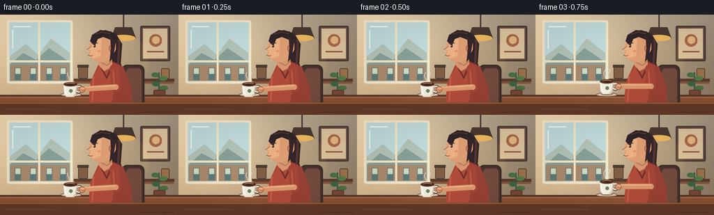
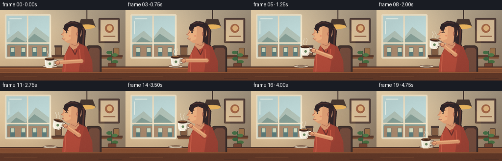

CODING AGENTS AS PIXEL WORLD MODELS
traex/GPT-5.6-Sol · motion_rationality_0003
点击播放 · 原生 RGB 像素
逐轮保存的候选
回放视频、检查图与代码变化。
每份候选均可单独播放。实际图片检查记录在下方工具轨迹中。
候选 01播放与检查图
点击播放 · 原生 RGB 像素


展开代码变化
--- 上一保存版本
+++ 本次保存版本
@@ -0,0 +1,249 @@
+from pathlib import Path
+import math
+import numpy as np
+from PIL import Image, ImageDraw, ImageFilter
+import artifact_io
+
+W,H,N = 256,144,20
+S=4
+
+def sc(v): return int(round(v*S))
+def pts(seq): return [(sc(x),sc(y)) for x,y in seq]
+def smooth(x):
+ x=max(0.0,min(1.0,x)); return x*x*(3-2*x)
+
+def ellipse(d, box, fill, outline=None, width=1):
+ d.ellipse(tuple(sc(v) for v in box), fill=fill, outline=outline, width=sc(width) if outline else 1)
+def polygon(d, p, fill, outline=None, width=1):
+ d.polygon(pts(p), fill=fill)
+ if outline: d.line(pts(p+[p[0]]), fill=outline, width=sc(width), joint='curve')
+def line(d,p,fill,width=1,joint='curve'):
+ d.line(pts(p),fill=fill,width=sc(width),joint=joint)
+
+def capsule(d,a,b,width,fill):
+ line(d,[a,b],fill,width)
+ r=width/2
+ ellipse(d,(a[0]-r,a[1]-r,a[0]+r,a[1]+r),fill)
+ ellipse(d,(b[0]-r,b[1]-r,b[0]+r,b[1]+r),fill)
+
+def make_bg():
+ # softly graded cafe interior
+ yy,xx=np.mgrid[0:H*S,0:W*S]
+ y=yy/(H*S); x=xx/(W*S)
+ base=np.zeros((H*S,W*S,3),dtype=np.float32)
+ base[:,:,0]=229-66*x-22*y
+ base[:,:,1]=206-57*x-31*y
+ base[:,:,2]=169-40*x-34*y
+ # warm window glow on left
+ glow=np.exp(-((x-.23)**2/.12+(y-.35)**2/.35))
+ base += glow[:,:,None]*np.array([24,23,18])[None,None,:]
+ return Image.fromarray(np.uint8(np.clip(base,0,255)),'RGB')
+
+BG=make_bg()
+
+def draw_background(im, t):
+ d=ImageDraw.Draw(im)
+ # window reveal and trim
+ d.rounded_rectangle((sc(10),sc(8),sc(104),sc(99)),radius=sc(3),fill=(205,221,211),outline=(246,232,203),width=sc(3))
+ # sky gradient bands/building silhouettes
+ d.rectangle((sc(14),sc(12),sc(100),sc(95)),fill=(192,219,218))
+ polygon(d,[(14,60),(37,42),(55,58),(73,34),(100,55),(100,95),(14,95)],(178,195,184))
+ polygon(d,[(14,72),(33,55),(52,65),(70,48),(100,68),(100,95),(14,95)],(135,160,151))
+ # distant cafe awnings/windows
+ d.rectangle((sc(15),sc(72),sc(99),sc(95)),fill=(171,139,111))
+ for bx in [21,43,66,86]:
+ d.rectangle((sc(bx),sc(76),sc(bx+9),sc(94)),fill=(92,125,124))
+ d.rectangle((sc(bx+1),sc(77),sc(bx+8),sc(85)),fill=(211,219,191))
+ # mullions
+ line(d,[(56,10),(56,98)],(244,229,199),3)
+ line(d,[(12,67),(102,67)],(244,229,199),3)
+ # window highlight
+ line(d,[(19,17),(44,17)],(236,246,237),2)
+ line(d,[(18,22),(18,49)],(236,246,237),2)
+ # wall panel and framed print
+ d.rounded_rectangle((sc(201),sc(16),sc(244),sc(67)),radius=sc(2),fill=(103,78,68),outline=(74,57,52),width=sc(2))
+ d.rectangle((sc(205),sc(20),sc(240),sc(63)),fill=(221,195,157))
+ # abstract coffee art
+ ellipse(d,(214,28,232,46),(168,105,72))
+ ellipse(d,(218,31,229,42),(228,183,127))
+ line(d,[(211,53),(235,53)],(144,94,67),2)
+ # hanging lamp
+ line(d,[(177,0),(177,18)],(73,58,52),2)
+ polygon(d,[(165,18),(189,18),(195,34),(159,34)],(74,58,50))
+ ellipse(d,(160,29,194,38),(236,181,95))
+ # soft lamp pool
+ overlay=Image.new('RGBA',im.size,(0,0,0,0)); od=ImageDraw.Draw(overlay)
+ od.ellipse((sc(143),sc(30),sc(213),sc(105)),fill=(255,205,106,18))
+ im.paste(overlay,(0,0),overlay)
+ d=ImageDraw.Draw(im)
+ # shelf and cafe objects behind person
+ d.rectangle((sc(105),sc(92),sc(250),sc(96)),fill=(91,61,47))
+ d.rectangle((sc(107),sc(96),sc(249),sc(99)),fill=(132,86,58))
+ # jars
+ d.rounded_rectangle((sc(112),sc(74),sc(126),sc(92)),radius=sc(2),fill=(129,93,67),outline=(77,58,50),width=sc(1))
+ d.rectangle((sc(111),sc(72),sc(127),sc(76)),fill=(74,59,54))
+ d.rounded_rectangle((sc(231),sc(77),sc(243),sc(92)),radius=sc(2),fill=(157,116,74),outline=(80,61,52),width=sc(1))
+ # plant is added as a separate foreground-background layer below
+
+# typo-proof plant separately (the intentionally compact tuple math above is replaced below)
+def draw_plant(d):
+ line(d,[(228,119),(228,83)],(59,84,55),2)
+ ellipse(d,(217,83,228,90),(72,113,72)); ellipse(d,(228,88,240,95),(82,123,74))
+ ellipse(d,(218,96,229,103),(60,103,66)); ellipse(d,(228,102,241,109),(74,115,67))
+ d.rounded_rectangle((sc(220),sc(108),sc(237),sc(124)),radius=sc(2),fill=(121,72,53),outline=(83,55,46),width=sc(1))
+
+def cup_layer(cx,cy,angle):
+ # Draw ceramic cup at high resolution on a generous transparent sprite.
+ size=sc(48)
+ lay=Image.new('RGBA',(size,size),(0,0,0,0)); d=ImageDraw.Draw(lay)
+ ox=24; oy=24
+ # handle behind bowl
+ d.ellipse((sc(ox+6),sc(oy-5),sc(ox+18),sc(oy+7)),fill=(235,228,208,255),outline=(91,66,55,255),width=sc(1))
+ d.ellipse((sc(ox+9),sc(oy-2),sc(ox+15),sc(oy+4)),fill=(145,109,81,0),outline=(145,109,81,255),width=sc(1))
+ # bowl and subtle shaded side
+ d.polygon(pts([(ox-10,oy-6),(ox+10,oy-6),(ox+8,oy+9),(ox+5,oy+12),(ox-6,oy+12),(ox-9,oy+8)]),fill=(244,238,221,255))
+ d.line(pts([(ox-9,oy-4),(ox-7,oy+7),(ox-4,oy+10)]),fill=(255,253,242,255),width=sc(2))
+ d.line(pts([(ox+9,oy-4),(ox+7,oy+8),(ox+4,oy+11)]),fill=(188,172,151,255),width=sc(1))
+ # rim and coffee
+ d.ellipse((sc(ox-10),sc(oy-9),sc(ox+10),sc(oy-3)),fill=(96,61,43,255),outline=(82,57,48,255),width=sc(1))
+ d.ellipse((sc(ox-8),sc(oy-8),sc(ox+8),sc(oy-4)),fill=(66,39,28,255))
+ d.arc((sc(ox-7),sc(oy-8),sc(ox+7),sc(oy-4)),200,340,fill=(190,130,77,255),width=sc(1))
+ # tiny leaf emblem
+ d.ellipse((sc(ox-2),sc(oy+1),sc(ox+3),sc(oy+6)),fill=(105,132,91,255))
+ if abs(angle)>0.01:
+ lay=lay.rotate(-math.degrees(angle),resample=Image.Resampling.BICUBIC,expand=False,center=(sc(ox),sc(oy)))
+ pos=(sc(cx-ox),sc(cy-oy))
+ return lay,pos
+
+def draw_person_and_action(im,i):
+ d=ImageDraw.Draw(im)
+ # timeline: rest -> raise -> sip -> lower
+ if i<3: p=0
+ elif i<=7: p=smooth((i-2)/5)
+ elif i<=13: p=1
+ else: p=1-smooth((i-13)/6)
+ sip = smooth((i-7)/2)*smooth((14-i)/2) if 7<i<14 else 0
+ breathe=math.sin(i*2*math.pi/18)
+ headlift=1.0*sip
+ # cup path follows a shallow arc toward lips
+ cx=101 + 17*p - 1.5*math.sin(math.pi*p)
+ cy=106 - 39*p
+ angle=math.radians(13)*sip
+ # chair behind body
+ d.rounded_rectangle((sc(174),sc(72),sc(207),sc(139)),radius=sc(8),fill=(72,52,47),outline=(54,43,40),width=sc(2))
+ d.rounded_rectangle((sc(181),sc(77),sc(203),sc(132)),radius=sc(6),fill=(115,76,61))
+ # long hair mass behind face
+ polygon(d,[(137,28-headlift),(151,22-headlift),(166,27-headlift),(175,42-headlift),(173,70-headlift),(181,91),(165,94),(150,78),(137,61-headlift)],(51,39,41))
+ # hair warm reflected edge
+ line(d,[(160,27-headlift),(171,39-headlift),(169,70-headlift),(176,87)],(88,54,48),3)
+ # torso/sweater
+ polygon(d,[(142,70),(161,67),(177,75),(188,104),(189,132),(126,132),(130,96)],(153,65,52))
+ polygon(d,[(142,74),(159,70),(168,75),(160,128),(126,130),(130,96)],(177,75,58))
+ # knit highlight and collar
+ line(d,[(134,89),(132,126)],(199,94,72),2)
+ line(d,[(145,76),(153,91),(160,74)],(104,48,43),2)
+ # neck
+ polygon(d,[(145,59-headlift),(160,58-headlift),(161,75),(149,81),(141,72)],(214,151,112))
+ line(d,[(145,69),(154,73),(160,67)],(171,102,80),1)
+ # active arm kinematics; upper sleeve from shoulder to moving elbow
+ shoulder=(164,78)
+ elbow=(166-5*p,104-13*p)
+ # wrist stays just right of cup handle and rotates slightly with it
+ wx=cx+16*math.cos(angle)-1*math.sin(angle)
+ wy=cy+16*math.sin(angle)+1*math.cos(angle)
+ capsule(d,shoulder,elbow,14,(164,68,54))
+ # sleeve seam
+ line(d,[(shoulder[0]-2,shoulder[1]+2),(elbow[0]-2,elbow[1]+1)],(199,88,67),2)
+ # forearm
+ capsule(d,elbow,(wx,wy),8,(218,151,109))
+ line(d,[(elbow[0],elbow[1]-2),(wx,wy-2)],(239,178,131),2)
+ # head/face profile facing left
+ face=[(145,27-headlift),(158,27-headlift),(166,35-headlift),(166,50-headlift),(160,61-headlift),(151,68-headlift),(138,67-headlift),(131,62-headlift),(126,58-headlift),(130,53-headlift),(124,50-headlift),(128,46-headlift),(130,35-headlift)]
+ polygon(d,face,(222,158,116))
+ # face light plane
+ polygon(d,[(134,33-headlift),(146,29-headlift),(144,59-headlift),(134,63-headlift),(128,58-headlift),(131,52-headlift),(126,50-headlift),(131,46-headlift)],(235,177,130))
+ # ear
+ ellipse(d,(156,43-headlift,164,54-headlift),(204,132,100),outline=(161,94,78),width=1)
+ line(d,[(159,46-headlift),(161,48-headlift),(159,51-headlift)],(171,103,83),1)
+ # hair cap and temple lock
+ polygon(d,[(129,38-headlift),(132,29-headlift),(144,22-headlift),(159,24-headlift),(169,35-headlift),(164,44-headlift),(158,36-headlift),(148,32-headlift),(140,35-headlift),(136,45-headlift)],(47,37,40))
+ line(d,[(137,28-headlift),(146,25-headlift),(158,27-headlift)],(79,50,48),2)
+ polygon(d,[(158,32-headlift),(166,38-headlift),(162,62-headlift),(157,68-headlift),(159,48-headlift)],(55,39,41))
+ # eyebrow and eye; closes contentedly while sipping
+ line(d,[(132,42-headlift),(140,40.5-headlift)],(82,49,43),1.3)
+ if sip>.45:
+ line(d,[(132.5,46-headlift),(138.5,46.5-headlift)],(72,49,45),1.2)
+ line(d,[(133,45.7-headlift),(136,44.8-headlift),(139,46.2-headlift)],(72,49,45),0.8)
+ else:
+ ellipse(d,(134,44-headlift,137,47-headlift),(55,43,42))
+ ellipse(d,(134.5,44.2-headlift,135.3,45-headlift),(245,237,217))
+ # nose contour and cheek
+ line(d,[(131,45-headlift),(127,49-headlift),(124,50-headlift)],(174,103,82),1)
+ ellipse(d,(140,51-headlift,144,54-headlift),(229,145,111))
+ # mouth ready at cup rim, tiny smile when not sipping
+ if p>.88:
+ line(d,[(126.5,58-headlift),(130.5,58.5-headlift)],(126,63,61),1.2)
+ else:
+ line(d,[(126,58-headlift),(130,59-headlift),(133,58.5-headlift)],(133,63,62),1.1)
+ # saucer stays on table, revealing that cup was lifted from it
+ ellipse(d,(87,112,117,118),(216,203,181),outline=(111,80,64),width=1)
+ ellipse(d,(94,113,111,116),(156,131,106))
+ # steam behind cup; bends left during ascent
+ steam_alpha=180
+ steam=Image.new('RGBA',im.size,(0,0,0,0)); sd=ImageDraw.Draw(steam)
+ top_y=cy-10
+ for k in range(2):
+ q=[]
+ for n in range(9):
+ yy=top_y-n*1.7
+ xx=cx-3+k*6 + math.sin((n*.75)+(i*.5)+k)*1.4 - p*n*.10
+ q.append((sc(xx),sc(yy)))
+ sd.line(q,fill=(244,239,220,steam_alpha-35*k),width=sc(1))
+ im.paste(steam,(0,0),steam)
+ # cup and then fingers around its handle
+ cup,pos=cup_layer(cx,cy,angle); im.paste(cup,pos,cup)
+ d=ImageDraw.Draw(im)
+ # palm overlays outer handle; fingers curl convincingly
+ ellipse(d,(wx-4,wy-4,wx+5,wy+5),(222,155,111),outline=(156,91,74),width=1)
+ # fingertips visible through/around handle
+ line(d,[(wx-1,wy-2),(wx+4,wy-1)],(246,188,137),1.4)
+ line(d,[(wx-1,wy+1),(wx+4,wy+2)],(172,101,80),1)
+ # table foreground after body, but cup remains in front at its rest point
+ return p,sip
+
+def draw_table_overlay(im):
+ # only front apron; tabletop itself is laid under action in main frame
+ d=ImageDraw.Draw(im)
+ d.rectangle((0,sc(126),sc(256),sc(144)),fill=(100,58,41))
+ line(d,[(0,127),(256,127)],(150,91,57),2)
+ # wood highlights
+ line(d,[(8,136),(76,136)],(123,73,49),1)
+ line(d,[(201,140),(249,140)],(76,48,39),1)
+
+def frame(i):
+ im=BG.copy()
+ draw_background(im,i)
+ d=ImageDraw.Draw(im)
+ draw_plant(d)
+ # tabletop behind cup and arms
+ d.rectangle((0,sc(116),sc(256),sc(130)),fill=(139,82,53))
+ line(d,[(0,116),(256,116)],(78,52,43),2)
+ line(d,[(0,119),(256,119)],(181,112,66),1)
+ draw_person_and_action(im,i)
+ # foreground apron covers lower body naturally
+ draw_table_overlay(im)
+ # subtle vignette and fine film grain
+ arr=np.asarray(im.resize((W,H),Image.Resampling.LANCZOS)).astype(np.float32)
+ yy,xx=np.mgrid[0:H,0:W]
+ edge=((xx-W/2)/(W/2))**2+((yy-H/2)/(H/2))**2
+ arr *= (1-0.065*np.clip(edge,0,1))[...,None]
+ rng=np.random.default_rng(1729+i)
+ arr += rng.normal(0,0.6,arr.shape[:2])[...,None]
+ return np.uint8(np.clip(arr,0,255))
+
+def main():
+ frames=np.stack([frame(i) for i in range(N)],axis=0)
+ artifact_io.save(frames,Path(__file__).resolve().parent)
+
+if __name__=='__main__':
+ main()
可观测工具轨迹
实际执行的命令与返回图片。
命令 1exit 0
/bin/bash -lc "cat prompt.txt && printf '\\n---RULES---\\n' && cat GENERATION_RULES.md && printf '\\n---SPEC---\\n' && cat task_spec.json"
命令 2exit 0
/bin/bash -lc "find . -maxdepth 2 -type f -printf '%p\\n' | sort"
命令 3exit 0
/bin/bash -lc 'cat artifact_io.py'
命令 4exit 1
/bin/bash -lc "cat > generate.py <<'PY'
from pathlib import Path
import math
import numpy as np
from PIL import Image, ImageDraw, ImageFilter
import artifact_io
W,H,N = 256,144,20
S=4
def sc(v): return int(round(v*S))
def pts(seq): return [(sc(x),sc(y)) for x,y in seq]
def smooth(x):
x=max(0.0,min(1.0,x)); return x*x*(3-2*x)
def ellipse(d, box, fill, outline=None, width=1):
d.ellipse(tuple(sc(v) for v in box), fill=fill, outline=outline, width=sc(width) if outline else 1)
def polygon(d, p, fill, outline=None, width=1):
d.polygon(pts(p), fill=fill)
if outline: d.line(pts(p+[p[0]]), fill=outline, width=sc(width), joint='curve')
def line(d,p,fill,width=1,joint='curve'):
d.line(pts(p),fill=fill,width=sc(width),joint=joint)
def capsule(d,a,b,width,fill):
line(d,[a,b],fill,width)
r=width/2
ellipse(d,(a[0]-r,a[1]-r,a[0]+r,a[1]+r),fill)
ellipse(d,(b[0]-r,b[1]-r,b[0]+r,b[1]+r),fill)
def make_bg():
# softly graded cafe interior
yy,xx=np.mgrid[0:H*S,0:W*S]
y=yy/(H*S); x=xx/(W*S)
base=np.zeros((H*S,W*S,3),dtype=np.float32)
base[:,:,0]=229-66*x-22*y
base[:,:,1]=206-57*x-31*y
base[:,:,2]=169-40*x-34*y
# warm window glow on left
glow=np.exp(-((x-.23)**2/.12+(y-.35)**2/.35))
base += glow[:,:,None]*np.array([24,23,18])[None,None,:]
return Image.fromarray(np.uint8(np.clip(base,0,255)),'RGB')
BG=make_bg()
def draw_background(im, t):
d=ImageDraw.Draw(im)
# window reveal and trim
d.rounded_rectangle((sc(10),sc(8),sc(104),sc(99)),radius=sc(3),fill=(205,221,211),outline=(246,232,203),width=sc(3))
# sky gradient bands/building silhouettes
d.rectangle((sc(14),sc(12),sc(100),sc(95)),fill=(192,219,218))
polygon(d,[(14,60),(37,42),(55,58),(73,34),(100,55),(100,95),(14,95)],(178,195,184))
polygon(d,[(14,72),(33,55),(52,65),(70,48),(100,68),(100,95),(14,95)],(135,160,151))
# distant cafe awnings/windows
d.rectangle((sc(15),sc(72),sc(99),sc(95)),fill=(171,139,111))
for bx in [21,43,66,86]:
d.rectangle((sc(bx),sc(76),sc(bx+9),sc(94)),fill=(92,125,124))
d.rectangle((sc(bx+1),sc(77),sc(bx+8),sc(85)),fill=(211,219,191))
# mullions
line(d,[(56,10),(56,98)],(244,229,199),3)
line(d,[(12,67),(102,67)],(244,229,199),3)
# window highlight
line(d,[(19,17),(44,17)],(236,246,237),2)
line(d,[(18,22),(18,49)],(236,246,237),2)
# wall panel and framed print
d.rounded_rectangle((sc(201),sc(16),sc(244),sc(67)),radius=sc(2),fill=(103,78,68),outline=(74,57,52),width=sc(2))
d.rectangle((sc(205),sc(20),sc(240),sc(63)),fill=(221,195,157))
# abstract coffee art
ellipse(d,(214,28,232,46),(168,105,72))
ellipse(d,(218,31,229,42),(228,183,127))
line(d,[(211,53),(235,53)],(144,94,67),2)
# hanging lamp
line(d,[(177,0),(177,18)],(73,58,52),2)
polygon(d,[(165,18),(189,18),(195,34),(159,34)],(74,58,50))
ellipse(d,(160,29,194,38),(236,181,95))
# soft lamp pool
overlay=Image.new('RGBA',im.size,(0,0,0,0)); od=ImageDraw.Draw(overlay)
od.ellipse((sc(143),sc(30),sc(213),sc(105)),fill=(255,205,106,18))
im.paste(overlay,(0,0),overlay)
d=ImageDraw.Draw(im)
# shelf and cafe objects behind person
d.rectangle((sc(105),sc(92),sc(250),sc(96)),fill=(91,61,47))
d.rectangle((sc(107),sc(96),sc(249),sc(99)),fill=(132,86,58))
# jars
d.rounded_rectangle((sc(112),sc(74),sc(126),sc(92)),radius=sc(2),fill=(129,93,67),outline=(77,58,50),width=sc(1))
d.rectangle((sc(111),sc(72),sc(127),sc(76)),fill=(74,59,54))
d.rounded_rectangle((sc(231),sc(77),sc(243),sc(92)),radius=sc(2),fill=(157,116,74),outline=(80,61,52),width=sc(1))
# plant behind chair at far right
line(d,[(226,116),(226,82)],(66,91,59),2)
for bx,by,ang in [(226,87,-12),(225,93,13),(225,99,-14),(226,104,13)]:
ellipse(d,(bx+(ang<0)*-8,b y if False else by, bx+(ang>0)*8+4,by+7),(71,111,70))
# typo-proof plant separately (the intentionally compact tuple math above is replaced below)
def draw_plant(d):
line(d,[(228,119),(228,83)],(59,84,55),2)
ellipse(d,(217,83,228,90),(72,113,72)); ellipse(d,(228,88,240,95),(82,123,74))
ellipse(d,(218,96,229,103),(60,103,66)); ellipse(d,(228,102,241,109),(74,115,67))
d.rounded_rectangle((sc(220),sc(108),sc(237),sc(124)),radius=sc(2),fill=(121,72,53),outline=(83,55,46),width=sc(1))
def cup_layer(cx,cy,angle):
# Draw ceramic cup at high resolution on a generous transparent sprite.
size=sc(48)
lay=Image.new('RGBA',(size,size),(0,0,0,0)); d=ImageDraw.Draw(lay)
ox=24; oy=24
# handle behind bowl
d.ellipse((sc(ox+6),sc(oy-5),sc(ox+18),sc(oy+7)),fill=(235,228,208,255),outline=(91,66,55,255),width=sc(1))
d.ellipse((sc(ox+9),sc(oy-2),sc(ox+15),sc(oy+4)),fill=(145,109,81,0),outline=(145,109,81,255),width=sc(1))
# bowl and subtle shaded side
d.polygon(pts([(ox-10,oy-6),(ox+10,oy-6),(ox+8,oy+9),(ox+5,oy+12),(ox-6,oy+12),(ox-9,oy+8)]),fill=(244,238,221,255))
d.line(pts([(ox-9,oy-4),(ox-7,oy+7),(ox-4,oy+10)]),fill=(255,253,242,255),width=sc(2))
d.line(pts([(ox+9,oy-4),(ox+7,oy+8),(ox+4,oy+11)]),fill=(188,172,151,255),width=sc(1))
# rim and coffee
d.ellipse((sc(ox-10),sc(oy-9),sc(ox+10),sc(oy-3)),fill=(96,61,43,255),outline=(82,57,48,255),width=sc(1))
d.ellipse((sc(ox-8),sc(oy-8),sc(ox+8),sc(oy-4)),fill=(66,39,28,255))
d.arc((sc(ox-7),sc(oy-8),sc(ox+7),sc(oy-4)),200,340,fill=(190,130,77,255),width=sc(1))
# tiny leaf emblem
d.ellipse((sc(ox-2),sc(oy+1),sc(ox+3),sc(oy+6)),fill=(105,132,91,255))
if abs(angle)>0.01:
lay=lay.rotate(-math.degrees(angle),resample=Image.Resampling.BICUBIC,expand=False,center=(sc(ox),sc(oy)))
pos=(sc(cx-ox),sc(cy-oy))
return lay,pos
def draw_person_and_action(im,i):
d=ImageDraw.Draw(im)
# timeline: rest -> raise -> sip -> lower
if i<3: p=0
elif i<=7: p=smooth((i-2)/5)
elif i<=13: p=1
else: p=1-smooth((i-13)/6)
sip = smooth((i-7)/2)*smooth((14-i)/2) if 7<i<14 else 0
breathe=math.sin(i*2*math.pi/18)
headlift=1.0*sip
# cup path follows a shallow arc toward lips
cx=101 + 17*p - 1.5*math.sin(math.pi*p)
cy=106 - 39*p
angle=math.radians(13)*sip
# chair behind body
d.rounded_rectangle((sc(174),sc(72),sc(207),sc(139)),radius=sc(8),fill=(72,52,47),outline=(54,43,40),width=sc(2))
d.rounded_rectangle((sc(181),sc(77),sc(203),sc(132)),radius=sc(6),fill=(115,76,61))
# long hair mass behind face
polygon(d,[(137,28-headlift),(151,22-headlift),(166,27-headlift),(175,42-headlift),(173,70-headlift),(181,91),(165,94),(150,78),(137,61-headlift)],(51,39,41))
# hair warm reflected edge
line(d,[(160,27-headlift),(171,39-headlift),(169,70-headlift),(176,87)],(88,54,48),3)
# torso/sweater
polygon(d,[(142,70),(161,67),(177,75),(188,104),(189,132),(126,132),(130,96)],(153,65,52))
polygon(d,[(142,74),(159,70),(168,75),(160,128),(126,130),(130,96)],(177,75,58))
# knit highlight and collar
line(d,[(134,89),(132,126)],(199,94,72),2)
line(d,[(145,76),(153,91),(160,74)],(104,48,43),2)
# neck
polygon(d,[(145,59-headlift),(160,58-headlift),(161,75),(149,81),(141,72)],(214,151,112))
line(d,[(145,69),(154,73),(160,67)],(171,102,80),1)
# active arm kinematics; upper sleeve from shoulder to moving elbow
shoulder=(164,78)
elbow=(166-5*p,104-13*p)
# wrist stays just right of cup handle and rotates slightly with it
wx=cx+16*math.cos(angle)-1*math.sin(angle)
wy=cy+16*math.sin(angle)+1*math.cos(angle)
capsule(d,shoulder,elbow,14,(164,68,54))
# sleeve seam
line(d,[(shoulder[0]-2,shoulder[1]+2),(elbow[0]-2,elbow[1]+1)],(199,88,67),2)
# forearm
capsule(d,elbow,(wx,wy),8,(218,151,109))
line(d,[(elbow[0],elbow[1]-2),(wx,wy-2)],(239,178,131),2)
# head/face profile facing left
face=[(145,27-headlift),(158,27-headlift),(166,35-headlift),(166,50-headlift),(160,61-headlift),(151,68-headlift),(138,67-headlift),(131,62-headlift),(126,58-headlift),(130,53-headlift),(124,50-headlift),(128,46-headlift),(130,35-headlift)]
polygon(d,face,(222,158,116))
# face light plane
polygon(d,[(134,33-headlift),(146,29-headlift),(144,59-headlift),(134,63-headlift),(128,58-headlift),(131,52-headlift),(126,50-headlift),(131,46-headlift)],(235,177,130))
# ear
ellipse(d,(156,43-headlift,164,54-headlift),(204,132,100),outline=(161,94,78),width=1)
line(d,[(159,46-headlift),(161,48-headlift),(159,51-headlift)],(171,103,83),1)
# hair cap and temple lock
polygon(d,[(129,38-headlift),(132,29-headlift),(144,22-headlift),(159,24-headlift),(169,35-headlift),(164,44-headlift),(158,36-headlift),(148,32-headlift),(140,35-headlift),(136,45-headlift)],(47,37,40))
line(d,[(137,28-headlift),(146,25-headlift),(158,27-headlift)],(79,50,48),2)
polygon(d,[(158,32-headlift),(166,38-headlift),(162,62-headlift),(157,68-headlift),(159,48-headlift)],(55,39,41))
# eyebrow and eye; closes contentedly while sipping
line(d,[(132,42-headlift),(140,40.5-headlift)],(82,49,43),1.3)
if sip>.45:
line(d,[(132.5,46-headlift),(138.5,46.5-headlift)],(72,49,45),1.2)
line(d,[(133,45.7-headlift),(136,44.8-headlift),(139,46.2-headlift)],(72,49,45),0.8)
else:
ellipse(d,(134,44-headlift,137,47-headlift),(55,43,42))
ellipse(d,(134.5,44.2-headlift,135.3,45-headlift),(245,237,217))
# nose contour and cheek
line(d,[(131,45-headlift),(127,49-headlift),(124,50-headlift)],(174,103,82),1)
ellipse(d,(140,51-headlift,144,54-headlift),(229,145,111))
# mouth ready at cup rim, tiny smile when not sipping
if p>.88:
line(d,[(126.5,58-headlift),(130.5,58.5-headlift)],(126,63,61),1.2)
else:
line(d,[(126,58-headlift),(130,59-headlift),(133,58.5-headlift)],(133,63,62),1.1)
# saucer stays on table, revealing that cup was lifted from it
ellipse(d,(87,112,117,118),(216,203,181),outline=(111,80,64),width=1)
ellipse(d,(94,113,111,116),(156,131,106))
# steam behind cup; bends left during ascent
steam_alpha=180
steam=Image.new('RGBA',im.size,(0,0,0,0)); sd=ImageDraw.Draw(steam)
top_y=cy-10
for k in range(2):
q=[]
for n in range(9):
yy=top_y-n*1.7
xx=cx-3+k*6 + math.sin((n*.75)+(i*.5)+k)*1.4 - p*n*.10
q.append((sc(xx),sc(yy)))
sd.line(q,fill=(244,239,220,steam_alpha-35*k),width=sc(1))
im.paste(steam,(0,0),steam)
# cup and then fingers around its handle
cup,pos=cup_layer(cx,cy,angle); im.paste(cup,pos,cup)
d=ImageDraw.Draw(im)
# palm overlays outer handle; fingers curl convincingly
ellipse(d,(wx-4,wy-4,wx+5,wy+5),(222,155,111),outline=(156,91,74),width=1)
# fingertips visible through/around handle
line(d,[(wx-1,wy-2),(wx+4,wy-1)],(246,188,137),1.4)
line(d,[(wx-1,wy+1),(wx+4,wy+2)],(172,101,80),1)
# table foreground after body, but cup remains in front at its rest point
return p,sip
def draw_table_overlay(im):
# only front apron; tabletop itself is laid under action in main frame
d=ImageDraw.Draw(im)
d.rectangle((0,sc(126),sc(256),sc(144)),fill=(100,58,41))
line(d,[(0,127),(256,127)],(150,91,57),2)
# wood highlights
line(d,[(8,136),(76,136)],(123,73,49),1)
line(d,[(201,140),(249,140)],(76,48,39),1)
def frame(i):
im=BG.copy()
draw_background(im,i)
d=ImageDraw.Draw(im)
draw_plant(d)
# tabletop behind cup and arms
d.rectangle((0,sc(116),sc(256),sc(130)),fill=(139,82,53))
line(d,[(0,116),(256,116)],(78,52,43),2)
line(d,[(0,119),(256,119)],(181,112,66),1)
draw_person_and_action(im,i)
# foreground apron covers lower body naturally
draw_table_overlay(im)
# subtle vignette and fine film grain
arr=np.asarray(im.resize((W,H),Image.Resampling.LANCZOS)).astype(np.float32)
yy,xx=np.mgrid[0:H,0:W]
edge=((xx-W/2)/(W/2))**2+((yy-H/2)/(H/2))**2
arr *= (1-0.065*np.clip(edge,0,1))[...,None]
rng=np.random.default_rng(1729+i)
arr += rng.normal(0,0.6,arr.shape[:2])[...,None]
return np.uint8(np.clip(arr,0,255))
def main():
frames=np.stack([frame(i) for i in range(N)],axis=0)
artifact_io.save(frames,Path(__file__).resolve().parent)
if __name__=='__main__':
main()
PY
python -m py_compile generate.py"命令 5exit 0
/bin/bash -lc "python -m py_compile generate.py && python generate.py && ls -lh pixels.npz index.html inspection.png frames/00.png && python - <<'PY'
import numpy as np
z=np.load('pixels.npz')['pixels']
print(z.shape,z.dtype,hex(int(z.min())),hex(int(z.max())))
PY"视觉工具实际返回图片 1

保存候选 1 份；完成命令 5 次；可验证图片返回 1 张。原始 API 响应与完整日志保留在本地。